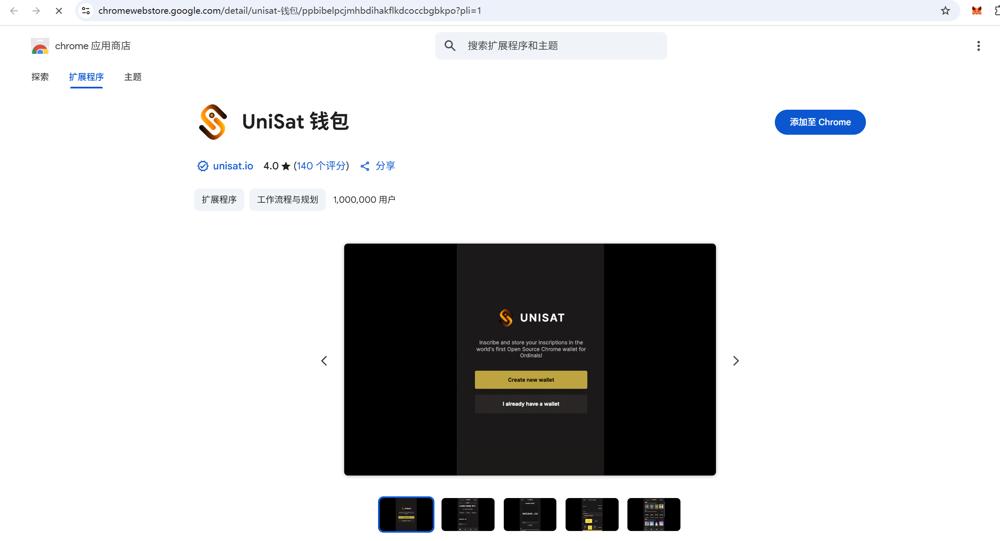
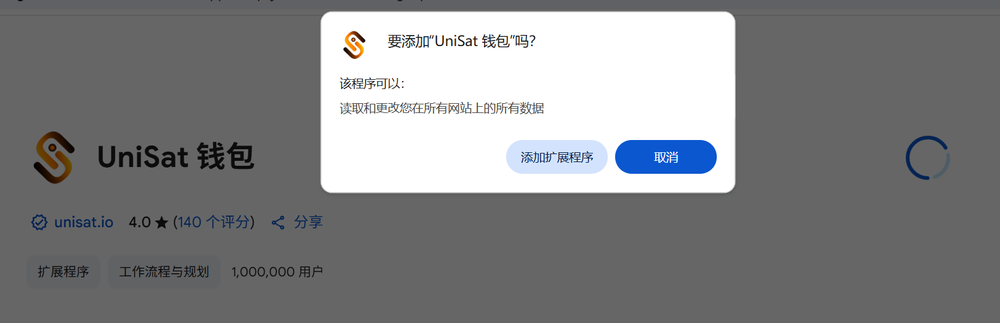
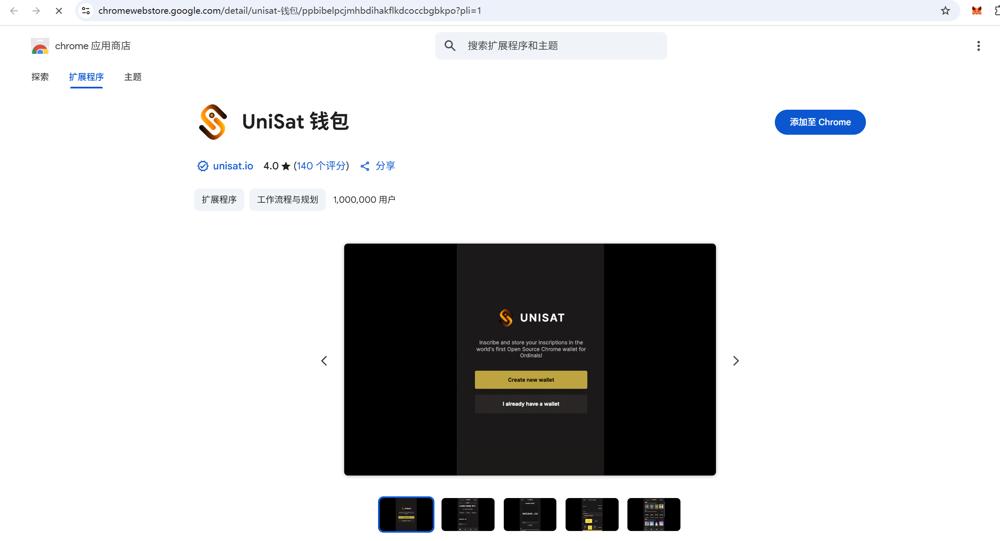
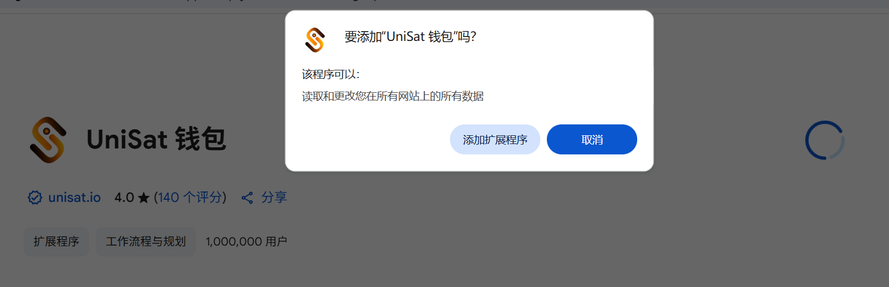

第15讲：比特币钱包
💡 自学入门
Web3不是一件容易的事，作为一个刚刚入门 Web3 的新人，梳理一下最简单直观的Web3小白入门教程。整合开源社区优质资源，为大家从入门到精通 Web3 指路。每周更新 1-3 讲。欢迎关注我的推特：@bhbtc1337
进入微信交流群请填表：表格链接
文章开源在 GitHub：Get-Started-with-Web3
目录
前言
当进入加密货币世界时，拥有一个安全可靠的比特币钱包是你的第一道门槛。就像你不会把现金随意放在街头一样，你的加密资产同样需要一个安全的“容器”来存储和管理。
区块链的世界被喜为一片黑暗森林，每个参与者都需要学会保护自己的财产安全，因为这里没有人会为你负责。和《三体》中的黑暗森林法则类似，区块链世界里，保护好自己的私钥，藏得越深越安全，切记 Not Your Key, Not Your Coin。
对于初学者而言，你可能需要一些时间来适应这个世界的规则——例如，当你丢失钱包密码时，这里没有“找回密码”的按钮😂。在这一节中，我们将一起探讨比特币钱包的核心概念，不同类型的钱包及其利弊，以及如何一步步创建属于你自己的第一个比特币钱包。
比特币钱包基本概念
什么是比特币钱包
比特币钱包是用于存储和管理比特币私钥的工具。比特币钱包并不直接存储比特币，而是存储一组密钥对（私钥和公钥）。私钥用来签署交易，而公钥通过加密算法生成比特币地址，用于接收比特币。钱包是用户与比特币网络互动的桥梁，它允许你接收、发送和管理比特币资产。
比特币钱包的种类
比特币钱包可以从以下两个维度来进行分类：
根据是否触网分类
热钱包：热钱包连接互联网，适合日常使用和交易。这类钱包包括浏览器插件钱包、手机钱包和桌面钱包。由于热钱包始终在线，它们容易受到网络攻击，因此安全性较低。
冷钱包：冷钱包不连接互联网，适合长期存储比特币。包括硬件钱包和纸钱包等。冷钱包因为不联网，安全性更高，但使用起来不如热钱包方便。
根据验证方式分类
全节点钱包：全节点钱包是运行完整的比特币区块链节点的软件，它不仅管理私钥，还直接与比特币网络同步所有区块数据。全节点钱包提供最高级别的安全性和隐私性，但需要大量的存储空间和网络带宽。
轻量级钱包：轻量级钱包不下载整个区块链数据，而是依赖第三方节点进行交易验证。虽然这些钱包更轻便，适合移动设备使用，但安全性和隐私性略低于全节点钱包。
比特币钱包的用途
比特币钱包的主要用途包括：
存储比特币：钱包用来安全存储比特币的私钥，确保你的比特币资产只有你能控制。
接收和发送比特币：钱包生成的比特币地址可以用来接收比特币，你也可以使用钱包发送比特币给其他人。
管理资产：钱包提供的界面和工具可以帮助你查看余额、交易记录以及管理多种加密货币资产。
手把手教你创建一个比特币钱包
浏览器插件钱包
浏览器插件钱包是最方便的热钱包之一，非常适合日常使用。以下是创建浏览器插件钱包的步骤：
选择钱包插件：推荐使用广泛使用和开源的钱包插件，如 Unisat。首页如下所示：

安装插件：访问插件的官方网站，按照提示将其安装到浏览器中。首页上点击右上角的connect，会让你选择连接一个钱包，选择unisat wallet，或者直接选择首页中的wallet选项下载，是一样的效果。
点击第四项下载浏览器扩展程序： 点击右上角的添加至chrome：
点击右上角的添加至chrome： 耐心等待下载和安装：
耐心等待下载和安装：创建新钱包：安装后，运行插件会弹窗提示：
打开插件并选择"创建新钱包"。根据提示设置一个强密码，并妥善保存钱包的助记词。创建钱包后会让你设置一个密码，这个密码是用来在这个机器上查询私钥的。
备份助记词：助记词是恢复钱包的唯一途径，必须妥善保管，确保其不会丢失或泄露。备份完成助记词之后，第二步会让你选择钱包地址：
不同的地址应对不同的使用场景，交易手续费也不同。可以先选择默认的第一个地址类型，交易费用较低。但是对于一些特殊的场景，如ordinals协议类型的交易，需要使用taproot地址，这个后续可以在钱包设置中灵活修改。
开始使用：创建完成后，你可以使用钱包生成比特币地址，接收和发送比特币。

旧手机自制冷钱包
旧手机可以被用来制作一个高安全性的冷钱包，用于长期存储比特币。
准备工作：找到一部旧手机，并将其恢复出厂设置，确保没有恶意软件。（选做）物理损坏旧手机的信号接收和发送模块
安装钱包应用：在手机上安装一个支持离线使用的钱包应用，如 比太钱包。
断开网络：在安装完钱包应用后，断开手机的网络连接（Wi-Fi 和移动数据）。
创建冷钱包：打开钱包应用，选择"创建新钱包"，确保生成的私钥随机，生成钱包助记词。
重点：备份助记词：将助记词抄写两份，加上冷钱包手机一共形成三份备份，分别放在不同的地方，注意防水防止字迹变淡消失。（这里的三份是经验之谈，能够比较好的平衡丢失和被人盗窃）
转移比特币：使用热钱包发送比特币到冷钱包的地址，并确保冷钱包的私钥不与网络连接。
离线存储：将手机关机，并安全存放在一个防火、防水的地方，作为离线冷钱包。
全节点钱包
全节点钱包适合那些希望完全控制自己的比特币交易和隐私的用户。
安装 Bitcoin Core：访问 Bitcoin Core 官方网站，下载并安装全节点钱包软件。
初次同步：启动 Bitcoin Core，软件会开始下载整个比特币区块链数据。这可能需要数天时间和数百 GB 的存储空间。
创建钱包：在 Bitcoin Core 完成初次同步后，选择"文件"菜单中的"创建钱包"选项。为新钱包设置名称，并根据需要选择是否加密。
备份钱包：在"文件"菜单中选择"备份钱包"，将钱包文件保存到安全的地方。确保备份副本离线存储，防止丢失。
管理比特币：你现在可以使用全节点钱包生成地址、接收比特币、发送比特币，并参与比特币网络的共识。
通过这几个步骤，你可以创建一个适合自己需求的比特币钱包，无论是用于日常交易还是长期存储比特币资产。选择适合的工具并了解其使用方法，是保障数字资产安全的重要一步。
常见问题
❓ 热钱包和冷钱包有什么区别？
热钱包和冷钱包的主要区别在于：
- 网络连接：热钱包保持与互联网连接，冷钱包完全离线、不连接网络
- 安全性：冷钱包安全性更高，因为不存在网络攻击风险；热钱包更容易受到黑客攻击
- 使用便利性：热钱包使用更便捷，可以随时进行交易；冷钱包需要额外的步骤才能发送交易
- 应用场景：热钱包适合日常交易和小额资金；冷钱包适合长期存储和大额资产
❓ 助记词是什么，为什么这么重要？
助记词是一组用来生成和恢复钱包私钥的普通单词。其重要性在于：
- 私钥恢复：如果你的设备丢失或损坏，助记词是恢复钱包访问权的唯一方式
- 跨平台兼容：助记词可以在不同的钱包软件之间共用，方便迁移
- 人类可读：比起复杂的私钥字符串，单词更容易记录和存储
如果助记词丢失，就相当于永久失去了钱包中的所有资产访问权。
❓ 作为初学者我应该选择什么类型的钱包？
作为初学者，你可以考虑以下选择：
- 开始时：选用像 unisat 这样的浏览器扩展钱包或手机应用钱包，操作相对简单
- 小额资产：对于小额比特币，热钱包是合适的
- 积累经验后：随着资产增长，添加冷钱包来存储大部分资产
结语
创建和管理比特币钱包是每一个Web3探索者的基础技能。当你掌握了不同类型钱包的特点和用途后，你将能够根据自身需求做出明智的选择，并安全地管理你的加密资产。
记住，在加密货币世界里，安全不是一个可选项而是必须项。每个人都要为自己的资产安全负责，这就是“Not Your Keys, Not Your Coins”所传达的核心理念。
你的加密货币之旅已经开始，希望你能在这个充满刺激和机会的领域中找到自己的路径。记住，万事开头难，当你走得足够远，回头看看，会发现自己比想象中进步更多。